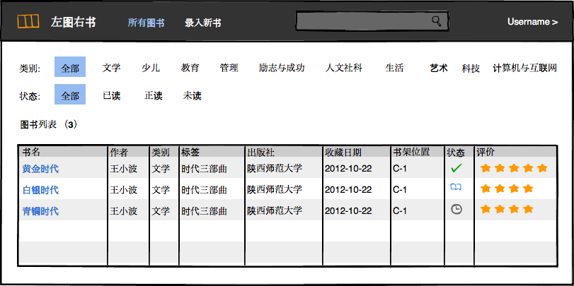

历时一周，OS X 10.11 (EI Capitan) 终于下载完成并成功安装，6个多G，多少次下载都是半途报错退出，今天终于大功告成。

先体验一把分屏：

分屏后，屏幕明显不够用，显示器跟不上时代步伐了。看显示器去！是上 4K 呢还是上 4K 呢？

历时一周，OS X 10.11 (EI Capitan) 终于下载完成并成功安装，6个多G，多少次下载都是半途报错退出，今天终于大功告成。
先体验一把分屏：
分屏后，屏幕明显不够用，显示器跟不上时代步伐了。看显示器去！是上 4K 呢还是上 4K 呢？
我闻道比较晚，今年年初，在汽车之家韩路的一篇西藏游记中才知道《三体》。断断续续地，电子版加纸质书，现在终于读完了这三部长篇硬科幻。在这期间，满脑子里都是这么些词汇：三体，智子，水滴，黑暗森林，二维展开，黑域，光速飞船，曲率驱动，反物质，柯伊伯带，奥尔特星云，猎户座旋臂……

最有意思的还是三体问题：三颗恒星互为吸引，轨道变幻莫测，运行永远没有规律，导致了三体行星的生存环境也是诡异万变，三体人在乱纪元与恒纪元之间脱水吸水，文明一次次毁灭又一次次重建。三体问题无解，纵然是能造出光速飞船的三体文明也无能为力，所以咱也还是别去想了。
黑暗森林，是一个比拟，而我想寻找另外一个比拟来形容宇宙中的生存法则，想了半天终于灵光一现——囚徒困境。虽然这两者总体差别很大，但核心逻辑是相似的，发现与被发现者就类似于那两个囚徒，因为无法确定对方是怎么想的，所以最保险的做法是主动出击，先下手为强，为此甚至可以牺牲自己的部分利益，囚徒困境中是较短的刑期，宇宙中是维度降低最后将波及自身。
黑域和光速飞船是有关系的，光速飞船产生的航迹就是一个小型的黑域，在这片黑域中，真空光速 = 30万公里/秒 - 光速飞船的速度（接近光速），如果这个值降低到这个星系的逃逸速度以下，那么任何物质都无法冲出这片黑域，哪怕是光，于是黑洞形成了，同时这也是一份安全声明，对外界表示：咱永远出不去了，所以不会攻击别人，大伙把心放肚子里，也不要打击咱了。而这种情况下就算受到攻击也不怕，因为光速低，根据爱因斯坦的质能方程E=MCC，一般攻击的光粒在进入黑域后能量急剧下降，起不到与恒星碰撞引起爆炸的作用，但是，如果是二向箔攻击呢？不知道。
二向箔就好比是一块石头，把它扔到一个平静的水面，涟漪自中心展开直至水岸，水域内所有具有质量的物质都被展开到一个平面，这个平面没有厚度，三维展开成二维，或者换一种说法，湖心有一个漩涡，水面上的一切都朝漩涡移动，移动速度接近光速，因此想要不被二维展开，逃逸速度必须达到光速。在这颗二向箔的攻击下，除了一艘小型光速飞船，整个太阳系全部被二维展开，最后消失了。
作为太阳系中的一个地球人，我决定用Canvas模拟一个太阳系的3D运行图，八大行星将永远围绕太阳转动，嗯，我自己都很期待！
走出《三体》，太阳还在，城市的星空也依然混沌，下一个引我入胜在哪里？
最近读到一本叫《Web全栈工程师的自我修养》的书，看了小半，写得还不错，但对其中的有个观点不能赞同——作者把非计算机专业的程序员称为野生程序员，并且不怎么瞧得上，隐约表达出了这类程序员术业不精难有作为的意思。
我觉得用野生两个字来形容这类程序员是一种贬称，野生用在这里绝对没有野生食材的意思，而是野地里随便长出来的东西，类似于野草野花，而作者觉得自己长在高大上的苗圃里，根正苗红；野花野草就算生命力再强，也东倒西歪，难成大器，而他们则可以按部就班地长成参天大树。
可是事实确实是这样吗？我只想举几个例子。
王小波，理工科出身，但是小说杂文写得炉火纯青，对现代汉语韵律的把握我认为无人出其右，被称为真正的文坛外高手。
最近获得雨果奖的刘慈欣，《三体》三部曲精彩绝伦，大学学的是水电工程。
这样的例子实在是不胜枚举，所以我要说野生程序员这个称谓是不应该出现的，对于这些非计算机专业毕业的程序员，他们应该有另外一个称号，那就是野战派程序员。虽然二者都有一个野字，但野生表达的是出身，而野战表现的则是手法，并且通常是一个过程，之后往往有更高级的战法。
野战手法及其延伸广泛存在：
围棋中，不走寻常定式，不按常规套路行棋，就是野战，代表人物王磊，外号“野力干红”，攻击力无比强悍，经常下别人不敢下的棋，倚天屠龙是家常便饭；另有韩国刘昌赫，号称“第一攻击手”，业余棋手出身，五座世界冠军奖杯得主。他们通过力战获得一定的优势，而最后的胜利大多数时候还是要依靠官子技艺，不然优势很可能就会在指间溜走。
解放战争战略反攻时期，为适应大规模作战，解放军编制为五大野战军，为什么叫野战军，我觉得应该是为了纪念之前的运动战游击战等野战战术。而最后，战法升级的野战军战胜了正规军。
编程中的野战，简单点说就是，没有老师，没有基础，以前是找本书看看，现在是网上搜个教程或例子，然后就下手写代码了，经过一番折腾，写出来的程序居然能跑。说实话，估计大部分野战派程序员确实就是停留在这一阶段了，不太求甚解，只求能解决问题，能做出东西，但在我看来，这已经是很了不起的成就了，就像一个没有学过汽修的人，鼓捣鼓捣就能把一辆抛锚的汽车修好，是值得尊重与敬佩的。然而，这其中绝对还有一小部分人，不满足于浅尝辄止，他们回过头来，研究基础知识与原理，在实践中检验真理，且战且进，最后成为大牛。
说了这么些，我并不是要证明野战派程序员有多牛逼，我想说的是，他们不应该受到歧视，不应该因为最初的起点不是计算机专业就断定他们难成大事，事实是真正的高手在哪儿都是高手，他们之中也有牛逼哄哄的人物，出类拔萃只是时间问题，登堂入室也是不在话下。
最后再悄悄地补充一句，我上学时学的是经济学，现在是一个努力向全栈工程师跃进的Web前端工程师。
前文说了左图右书的缘起，接下来说说大概的实现思路。
框架自然是 MEAN，数据库用 MongoDB，Web 服务器用 Express，服务端基于 Node.js 平台，前端框架使用 AngularJS，CSS 框架还是用 Bootstrap，jQuery 库尽量不用。
开发流程大致如下：
上述顺序可能会有调整，比如 Passport 可以实现在先，Grunt 也可以先做，具体看吧，一边研究，一边实践，一边总结。
十几年前，还在上高中的时候，手写了我的藏书大号，美其名曰“临风藏书”，然后找人刻成印章，开始了我的藏书大计。
那时候书贵钱少，藏书很是有限。记得一本围棋入门的书在新华书店都得卖到四五十，这对当时的我来说意味着什么？反正我记得上高一时，开学第一天临别前老妈给了我一百块，这是我兜里第一次装上能捂热的百元大钞，而这差不多就是在十一放假前的一个月里我能花销的全部了，所以这书我是真买不起。后来我花了一个中午的时间，在新华书店站着看完了书中的规则部分，回到学校后再讲给另外两个同学听，然后我们就开始在几何作业本的格子里下上围棋了。
十几年过去，买得起书了，可是藏书的热情早已大不如前，精心刻制的印章也不知道躲到哪个角落里去了。不过这些年陆陆续续倒也买了不少书，从前些年的海淀图书城、中关村图书大厦、第三极等实体书店，到这些年的亚马逊、当当、京东等电商平台，渐渐地书架越来越充实，这时就出现了一个问题：有时从网上看到一本好书，想买，可是又想不起来这书之前买过没有，为什么想不起来，因为买回来的书大多数都没有读过（惭愧），书架上摆得又比较随意，所以一下子还真是不知道有没有这书，所以每次都得在书架从上往下从左到右仔细找一遍才能确定是否下单。
为此，我决定在业余时间用 MEAN 开发一个简单的管理系统——左图右书，一是方便书籍管理；二是学以致用，为 MEAN 开发打个基础。下面先上个原型界面：

最近读到一篇文章《前端工程系列文章之——基础篇》，受益匪浅，在此作个笔记。

这一点没什么好说的，现在估计没有人赤手空拳去用原生代码实现整个应用吧。这就好比从家里去公司上班，假设是一段10公里的路程，基本上没有人腿着去吧，应用了框架或库，就差不多算是骑自行车上班了。

随着应用越来越复杂，代码压缩、检查、合并等也越来越成为必须。这一点目前在我的工作范围内产品尚未涉及，准备在自己的 左图右书 应用中应用。再以上班路途为例，有了自动化构建，可以说是开车上班了。

一个复杂的大型应用，如果不能做到模块化，尤其是 JS 的模块化，后期的维护绝对是个大灾难。就好比开车上班不知道路，也许运气好能到公司，更有可能南辕北辙，渐行渐远。

看图说话，作者总结得很到位。

资源的管理实际上就是指资源的加载，因为 Web 应用不同于客户端应用，所有资源都需要去服务器获取，因此资源的加载直接关乎着性能，大型应用更是如此。上图的资源表可能包含如下代码片段：
{
"a.js": {
"url": "/static/js/a.5f100fa.js",
"dep": [ "b.js", "a.css" ]
},
"a.css": {
"url": "/static/css/a.63cf374.css",
"dep": [ "button.css" ]
},
"b.js": {
"url": "/static/js/b.97193bf.js"
},
"button.css": {
"url": "/static/css/button.de33108.js"
}
}
通过构建工具扫描生成，而需要从这个资源表中加载什么，则是资源框架干的事，比如文中提到的Celerity。到了这个阶段，开车上班，就算全城大拥堵，你也能找到一条快速到达公司的路线。
LAMP 兴起的时候，我不知道在干什么，总之是没有赶上。
如今，MEAN 又横空出世，不能再错过了。
相较于 LAMP，MEAN 更适合我辈，因为从前端到后台 JavaScript 可以一杆清台。
努力成为一个全栈工程师！

最近用到了一款叫做 jQuery treetable 的插件，虽然功能不是非常强大，但是该有的都有，基本上能满足一般的表格树需求，不过文档稍显简单，接口只是一笔带过，所以用起来不是很顺手，下面就点击节点动态展开子节点写个 Demo:
$("#treeTable").treetable({
expandable: true,
onNodeExpand: function(){
// this = treetable node
// console.log(this);
// demo data, children nodes got from server actually
var row = '<tr data-tt-branch="true" data-tt-id="'+ this.id * 10 + 1 +
'" data-tt-parent-id="' + this.id + '">' +
'<td>1</td>' +
'<td>2</td>' +
'<td>3</td>' +
'<td>4</td>' +
'</tr>';
// load branch
$('#treeTable').treetable('loadBranch', this, row);
},
onNodeCollapse: function(){
$('#treeTable').treetable('unloadBranch', this);
}
});
需要注意的有几点：
两个月大的小安安，已经学会了吸吮手指头，开始发出咿咿呀呀的声音，越来越精，白天喜欢妈妈抱着睡觉。

时间，就象海绵里的水，只要愿挤，总还是有的。
——鲁迅
时间如果以天来衡量，一辈子大概也就36500天，想想真是短，根本不够数的。
但我们看不到这一点。
我们最常能想到的时间是以周为单位，从周一到周日，工作五天，然后休息两天，一周就过去了，如此周而复始，不知不觉中，30岁、40岁、50岁，……
以周为单位的时间是小刀子割肉，你总是感叹又过去了一周，一周又过去了，却很难意识到一生就这样在重复的平淡无奇的一周周中度过，最后也不知道会留下些什么。
以季节为单位来看，时间总是充满伤感。一年四季交替更迭，春天充满希望，夏天热情似火，秋天蔚蓝金黄，冬天白雪茫茫。你总会想起某年的某个季节在某地与某人做了某事，或留恋或后悔，并且记忆中的季节就像童话世界，美好得不像是真的，却又确实存在过，但后来再也没有遇到。对我来说，小时候的春天就在幼儿园课本里画着，真的有那么奇幻；夏天我不喜欢，没有什么印象；秋天似乎太匆忙，也想不起来了；冬天里最深的记忆是，在一个风雪交加的黄昏，我站在老屋的房檐下，望着白茫茫的田野，等待母亲归来。
以年、十年来算，除了唏嘘变得更老之外，没别的作用了。
换一种方式来看，从某个群体的角度看，比如对父母来说，自己的孩子就是时间，看着小不点渐渐长大，从满月，百日，周岁，到上幼儿园，上小学，上中学，上大学，然后工作，结婚，生子……不知不觉间自己就已经老了，一生的时间所剩无几。
对学生来说，时间就是一个学期接着另一个学期，当然了，中间还有寒暑假。开学的时候，对假期流连忘返；放假的时候，把学习扔到了九霄云外。
对小孩子来说，时间的结点在于过年。不知道现在的小孩对过年是不是期待，但在我们小的时候，过年真是过年啊。提前买好的新衣服在年初一早晨穿上，神气活现；然后去给大人们拜年，压岁钱自然是必不可少；鞭炮烟花放得不亦乐乎；远处的亲戚，也只有在过年的时候才能串上一串，同龄的表兄弟姐们聚在一起好不热闹。那时候的电视节目不像现在这么多，除了中央一台，就剩下了地方省台和当地的一个点播台，平常白天几乎都没什么可看的，但是到了春节，电视剧一天十几集十几集的放，当时看着可真是过瘾啊。这种小孩子的年，长大后就再也找不到了。
乱七八糟写了这么些，其实我想说的是，对我而言，时间真的是浪费了太多，本可以积跬步以至千里，但却是小流不积，全从指尖溜走，就这样恍惚到了三十一岁。
突然想起南宋的一首词：
《听雨》
少年听雨歌楼上，红烛昏罗帐。
壮年听雨客舟中，江阔云低，断雁叫西风。
而今听雨僧庐下，鬓已星星也。
悲欢离合总无情，一任阶前点滴到天明。
该词虽然是在抒发人生无常悲欢离合，但我想到的是，如今正值壮年，当如一首摇滚中所唱：躁起来吧，愁眉骑士！如此方不至于两鬓发白时回首往事，感叹一无所成。